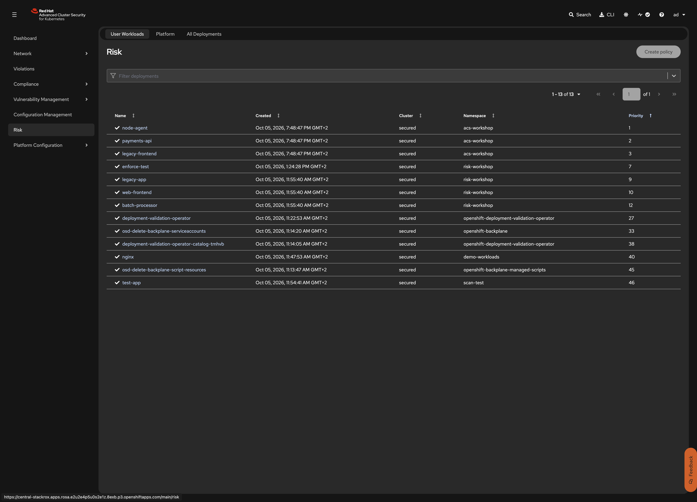
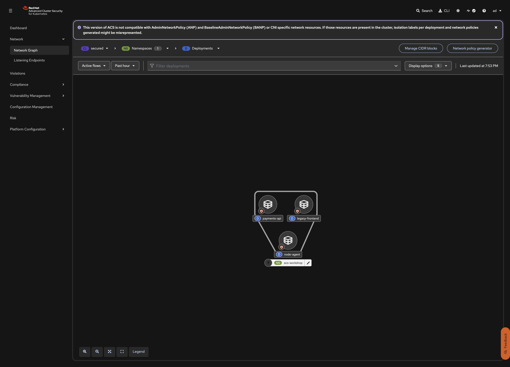

RHACS: Security Lifecycle Workshop
A CVE list tells you what is vulnerable. It does not tell you what is dangerous. In this step you use the RHACS Risk view, which ranks every deployment with a multi-factor score. The score combines image vulnerabilities, policy violations, service configuration (privileges, capabilities, read-write filesystem), network reachability, RBAC permissions, image age, and runtime behavior. You create some suspicious runtime activity, watch it change the ranking, trace real network flows in the Network Graph, and write a short prioritized remediation plan.
Prerequisites
-
Step 5 completed
-
ocaccess to the secured cluster (contextsecured) -
ROX_API_TOKENandACS_CENTRAL_ROUTEexported
| This step creates no YAML resources. It is about analysis and runtime observation. |
Steps to apply
1. Read the risk ranking
What: Open the ACS Risk view and compare the priority ranking to the CVE counts from Step 5.
Why: With hundreds of deployments across clusters, you cannot triage everything at once. The risk score helps you focus on the deployments that pose the most risk based on multiple factors - not just CVE count.
In the ACS console, open Risk and filter by Namespace: acs-workshop. Compare the Priority column with the CVE counts from Step 5. node-agent has the most CVEs, mostly Moderate and Low. legacy-frontend has fewer, but several are Critical and fixable. The ranking does not follow the CVE count.

Open node-agent > Risk indicators. Expect to see:
-
Service Configurations: privileged container, capabilities not dropped, read-write root filesystem
-
RBAC Configuration: the ServiceAccount can use the
privilegedSCC -
Image Freshness: the image is several years old
-
Policy Violations: Privileged Container, Fixable Severity at least Important, and others
Open legacy-frontend > Risk indicators. Expect:
-
Service Reachability: port exposed outside the cluster (Route)
-
Policy Violations: Environment Variable Contains Secret, Container using read-write root filesystem, and others
-
Image Vulnerabilities: fewer CVEs than the other images, but several Critical ones with fixes available
-
Components Useful for Attackers: package managers and shells that are present in the image
Open payments-api > Risk indicators. Note that Log4Shell (CVSS 10.0) is on the Deferred list from Step 5. The deployment is still at risk, because its image has other fixable, high-severity CVEs.
Verify: Deployments are ranked by risk, not by CVE count
The exact priority numbers are global across the cluster and depend on what else is running. What matters is the relative order: deployments with more severe configurations (privileged, internet-facing) rank higher than those with just a long list of Moderate CVEs.
2. Generate runtime signals that change risk
What: Simulate attacker behavior to generate runtime violations and see how they affect the risk ranking.
Why: RHACS monitors runtime behavior in addition to static vulnerability data. When suspicious processes run inside containers (shells, package managers, reading host files), the risk score goes up and new violations appear.
oc --context secured exec -n acs-workshop deploy/legacy-frontend -- apk --version
oc --context secured exec -n acs-workshop deploy/legacy-frontend -- \
sh -c 'id; cat /etc/passwd | head -3'
oc --context secured exec -n acs-workshop deploy/node-agent -- \
sh -c 'cat /host/etc/hostname; ls /host/var/lib/kubelet | head -3'~1 minute (wait for RHACS to process the runtime events)
After about 1 minute, check:
-
Violations: new runtime alerts such as Alpine Linux Package Manager Execution and Kubernetes Actions: Exec into Pod
-
Risk > legacy-frontend > Process discovery:
apk,sh,id, andcatappear in the event timeline, outside the deployment’s normal process baseline -
The Priority of the affected deployments goes up. Runtime evidence adds to the risk score.
Optional: on the Process discovery tab, lock the process baseline of legacy-frontend. Any process outside the baseline now raises a violation.
Verify: Runtime violations appear
In Violations, filter by Namespace: acs-workshop and Lifecycle stage: Runtime. You should see alerts for the oc exec activity.
3. Analyze network exposure
What: Use the RHACS Network Graph to visualize network flows and identify missing network segmentation.
Why: Log4Shell needs outbound connections (LDAP or RMI callbacks) to deliver a payload. Without egress controls, nothing blocks that callback. The Network Graph shows where network segmentation is missing.
In the ACS console, open Network > Network Graph and select the secured cluster, namespace acs-workshop.

Click legacy-frontend and check Flows. Ingress comes from the OpenShift router (external entities). No NetworkPolicy exists, so the graph marks every deployment as allowing all ingress and egress.
Click payments-api > Flows / Baseline. Note that without egress controls, the Log4Shell JNDI callback has an open path to the internet.
Verify: Network Graph shows no network policies
All three deployments should show unrestricted ingress and egress. The graph visualizes the attack surface that Step 8 will lock down.
4. Write the remediation plan
What: Synthesize the findings from the Risk view, runtime signals, and Network Graph into a prioritized remediation plan.
Why: Steps 7 and 8 implement this plan. Having a written plan before making changes helps you justify the work and track progress.
| Priority | Deployment | Main risk | Action | Step |
|---|---|---|---|---|
1 |
|
Privileged plus host access means container escape equals node compromise |
Remove privilege and host mounts, rebase on a current UBI 9 image |
7, 8 |
2 |
|
Internet-facing, root, plaintext secret, fixable Critical CVEs |
Rebase on a supported Red Hat NGINX image, non-root, secret from a Secret |
7, 8 |
3 |
|
Critical RCE with no patch available yet |
Formal exception (done in Step 5), egress-deny NetworkPolicy as compensating control, block new Log4Shell builds in CI |
7, 8, 9 |
- |
All |
Nothing stops a new vulnerable deployment |
Policy-as-code guardrails with admission enforcement |
7 |
Verify: Plan covers all three deployments
Each deployment has a prioritized action. The plan distinguishes between remediation (removing the vulnerability) and mitigation (reducing exploitability when the fix is not available).
What this solves (compared to previous steps)
| Problem from previous steps | How this step solves it |
|---|---|
CVE triage was done by severity alone |
Risk scoring combines CVE severity with privileges, network exposure, runtime behavior, and image age |
No visibility into runtime threats |
Process monitoring and baseline detection catch post-exploitation behavior |
No network visibility |
Network Graph shows real flows and missing segmentation |
What this does NOT solve (yet)
| Remaining problem | Addressed in |
|---|---|
Risk is understood but nothing enforces the remediation plan |
Step 7: Policy Enforcement turns the plan into automated guardrails |
The workloads are still running with all their vulnerabilities and misconfigurations |
Step 8: Remediation fixes the workloads and verifies that risk goes down |
Alternatives considered
| Approach | Notes |
|---|---|
RHACS Risk view (this workshop) |
Multi-factor scoring built into ACS. Combines static analysis with runtime behavior and network data. No extra tooling needed. |
CVSS score ranking only |
Simple but misses deployment context. A CVSS 10.0 in an isolated container is less urgent than a CVSS 7.5 in an internet-facing privileged pod. |
External risk management platform |
Adds cross-tool correlation but requires data export and integration. Does not see runtime behavior or network flows from ACS natively. |
Reset
This step created no cluster resources. The runtime activity only produced violations and process events in Central, and re-running the step simply creates new ones.
# If you locked the process baseline (step 2), unlock it:
# Risk > legacy-frontend > Process discovery > Unlock
# Optional: in Violations, filter by Namespace: acs-workshop and Lifecycle stage: Runtime
# Select the alerts from the oc exec activity and click "Mark as resolved"